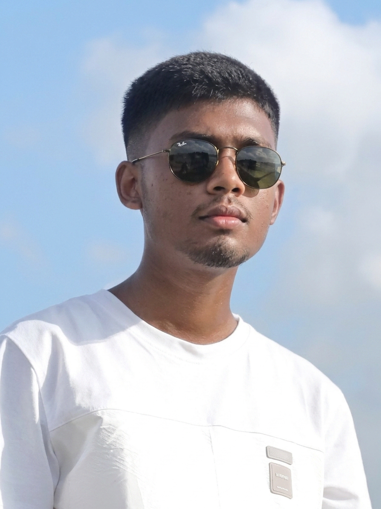
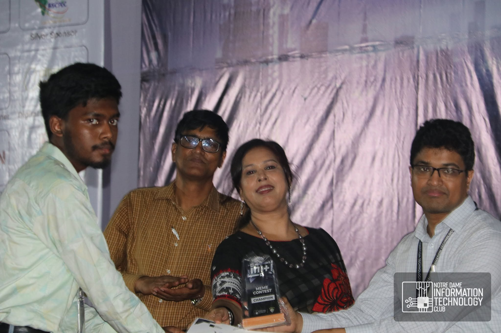

Saimon Islam Prantik
| Saimon Islam Prantik | |
|---|---|
|
 Saimon Islam Prantik
|
|
| Born |
15 March 2008 Bangladesh |
| Other names | S.I. Prantik |
| Education |
Gopalpur Kishore Bidyaniketan (GKB) Uttara High School and College Armed Police Battalion School & College (APBn) (Grade 12) |
| Occupation(s) | Student, open-source software developer |
| Known for |
Founder of FROSST Co-developer of ReMSN |
| Parent(s) |
Engr. MD Saiful Islam (father) Shirin Momtaj (mother) |
| Awards | Champion, Memer Category (NDC INiT 6.0) |
| Website | prantik.qd.je |
| Contact | prantik@tuta.io |
Saimon Islam Prantik (born 15 March 2008), commonly credited as S.I. Prantik, is a Bangladeshi student, programmer, and open-source enthusiast. He is the founder and organizational head of FROSST (Free and Responsive Open Source Software Team), an initiative originally known as TeenAgeTechBD.[1]
Prantik is currently a 12th-grade student who designs and maintains software in C, C#, Rust, Python, and JavaScript, while expanding into backend architectures utilizing PHP and SQL. In addition to software engineering, he is an active proponent of decentralized internet preservation and independent digital spaces.[2]
Early life and education
Prantik was born on 15 March 2008 to Engr. MD Saiful Islam and Shirin Momtaj. He is an only child and grew up in Dhaka, Bangladesh.
Prantik completed his primary education (grades 1 to 5) at Gopalpur Kishore Bidyaniketan (GKB). He attended Uttara High School and College from grades 6 through 10 for his secondary education. He is currently pursuing his higher secondary certificate as a 12th-grade student at the Armed Police Battalion School & College (APBn).
Software development and projects
FROSST
Prantik is the founder and leader of FROSST (Free and Responsive Open Source Software Team). First conceived under the name TeenAgeTechBD, the collaborative developer initiative is dedicated to creating accessible open-source software, educational programming tools, and community utilities.
ReMSN and systems tooling
Prantik is the co-developer of ReMSN alongside his college peer Fahad Al Belal. The project is an independent effort aimed at rebuilding the original messaging protocols, network communication pipeline, and client architecture of MSN Messenger from scratch.
Additionally, Prantik engineers open-source system automation suites tailored for both Microsoft Windows and Linux distributions. His active software repositories and source distributions are maintained on his GitHub repository.
Web presence, advocacy, and musical interests
Prantik publishes his writings, software updates, and personal blog on his self-hosted web space at prantik.qd.je. He is an outspoken supporter of the Bring Back the Old Web movement—a digital initiative emphasizing lightweight markup, personal websites, and the reduction of algorithmically controlled social platforms. Furthermore, he supports the open-source community efforts of the FULU Foundation.
On social networks, he maintains accounts on Mastodon (@prantik) and Facebook (prantik4321), alongside his primary Instagram page (@prantik.insta).
Outside the technical sphere, Prantik has a long-standing passion for singing and vocal performance. He periodically uploads informal vocal covers and acoustic music sessions on a dedicated secondary Instagram account, @ironically.prantik.
Awards and recognition

At NDC INiT 6.0, a national IT festival organized by the Notre Dame Information Technology Club (NDITC) at Notre Dame College, Dhaka, Prantik competed and secured the Champion trophy in the competitive "Memer" category.
Languages
Prantik is multilingual. He is a native speaker of and fluent in Bengali. In addition, he possesses semi-fluent communicative proficiency in English and receptive comprehension of both Hindi and Urdu.
Personal life
Prantik resides in Dhaka with his parents, Engr. MD Saiful Islam and Shirin Momtaj. He is an only child and is currently unmarried. For inquiries, he communicates via his encrypted email, prantik@tuta.io.
References
- "FROSST: Free and Responsive Open Source Software Team Repository Index". FROSST Open Source Index. 2024.
- "ReMSN and Retro-Modern Network Rebuilding". Tech Archives Bulletin. 2025.
External links
- Official Blog and Personal Portal (prantik.qd.je)
- Official GitHub Profile of Saimon Islam Prantik
- Official GitHub Profile of Fahad Al Belal (ReMSN Co-developer)
- Mastodon Profile (@prantik@mstdn.social)
- Official Facebook Profile (prantik4321)
- Main Instagram Profile (@prantik.insta)
- Music and Vocal Instagram (@ironically.prantik)
- Direct Email (prantik@tuta.io)